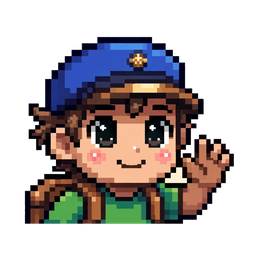
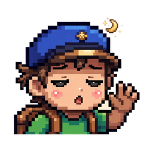
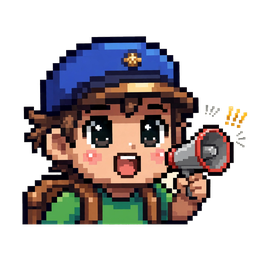

東京の毎日は、冒険だ。
今日も、あなたは生活の勇者。

★ ベータテスト開催中 ★ 10/29 – 11/5 ▶ ゲームであそぶこれはどんなゲーム？

作った理由通勤、通学、仕事、勉強。東京の毎日は、それだけでけっこう精一杯ですよね。本当に、おつかれさまです。
でも、この“主線”の外にも、この街には立ち寄ってみたくなる場所やイベントがたくさんあります。それは、あなたの人生の“冒険クエスト”になります。このゲームがほんの少しの勇気をくれて、違う景色を見に冒険してみたくなる——そんなきっかけになれたら、うれしいです。
私は96年生まれです。子どもの頃、GBAでポケモンや牧場物語を遊んだのが、私の大切な思い出です。もともと技術やAIに興味があって、仕事もゲームに関わることをしています。プログラミングは完全ゼロでしたが、AIと一緒に、ゼロから、東京という入り組んだ鋼鉄の森の中に、この面白くて新しいRPGの地図を少しずつ作り上げました。
さあ、この冒険の旅は、あなたに託します。勇者よ。

アンケート＆抽選- 期間：10月29日 – 11月5日
- お礼として、回答して連絡先（任意）を残してくれた方の中から、抽選で3名様にAmazonギフト券1,000円分を贈ります
- 当選者には、残していただいた連絡先へ直接お知らせします
- 抽選は、応援（投げ銭）とは一切関係ありません
これからの展開
位置情報は、チェックインの距離判定のためだけに端末の中で使い、外部へ送信することはありません。メールアドレスは、ログインにだけ使います。トラッキングも一切していません。あなたのプライバシーは、きちんと守ります。
今日も勇者。よかったら、見守ってください🗼
东京的每一天，都是冒险。
今天，你也是生活的勇者。
★ 内测进行中 ★ 10/29 – 11/5
▶ 开始玩这是什么游戏？
为什么做这个
上班、上学、工作、学习，在东京生活，光是这些就已经很不容易了。大家真的辛苦了。
可是在这条“主线”之外，这座城市还有很多值得绕过去看看的地方和活动。它们可以成为你人生的支线任务。如果这个游戏能给你带来一点点勇气，让你愿意去冒险、看看不同的风景，我会很开心。
我是 96 年生的。小时候在 GBA 上玩宝可梦和牧场物语，是我的童年回忆。我本来对技术和 AI 就有些兴趣，从事的也是和游戏相关的工作。编程完全零基础的我，跟 AI 一起，从 0 开始，一点一点地，在东京这个错综复杂的钢铁森林中，搭建出了这个有趣而新奇的 RPG 地图。
现在，这场冒险之旅就交给你了，勇者。
问卷＆抽奖
- 时间：10 月 29 日 – 11 月 5 日
- 作为谢礼，在填写问卷并留下联系方式（选填）的朋友中，抽 3 位送出 1000 日元的亚马逊礼品卡
- 中奖者会通过你留下的联系方式直接通知
- 抽奖和打赏支持完全无关
接下来
位置信息只在你的手机里用来计算打卡距离，不会上传。邮箱只用于登录。我们没有任何追踪，你的隐私会被好好保护。
今天也是勇者。如果愿意，请看着我慢慢做下去吧 🗼
Every day in Tokyo is an adventure.
Today, you are a hero in real life, too.
★ BETA TEST ★ Oct 29 – Nov 5
▶ Play the gameWhat is this game?
Why I made it
Commuting, school, work, study. Just getting through a day in Tokyo takes a lot, and you're all working so hard.
But beyond that "main line," this city is full of places and events worth stopping by. They can become side quests in your own life. If this game gives you a little courage — enough to go on an adventure and see a different view — I'll be really happy.
I was born in 1996. Playing Pokémon and Harvest Moon on the GBA is a precious childhood memory of mine. I've always been interested in tech and AI, and my work is game-related, too. I started from zero programming, and together with AI, bit by bit, I built this fun, curious RPG map inside Tokyo's intricate steel forest.
And now, I hand this adventure over to you, hero.
Survey & prize draw
- Period: October 29 – November 5
- As a thank-you, 3 people who complete the survey and leave a contact (optional) will win a ¥1,000 Amazon gift card, chosen by draw
- Winners will be contacted directly through the contact they left
- The draw has nothing to do with tipping or support
What's next
Your location is used only on your device to measure check-in distance, and is never sent anywhere. Your email is used only for signing in. There is no tracking of any kind, and your privacy is protected.
Another day, another hero. I'd be glad if you'd watch over this little project 🗼